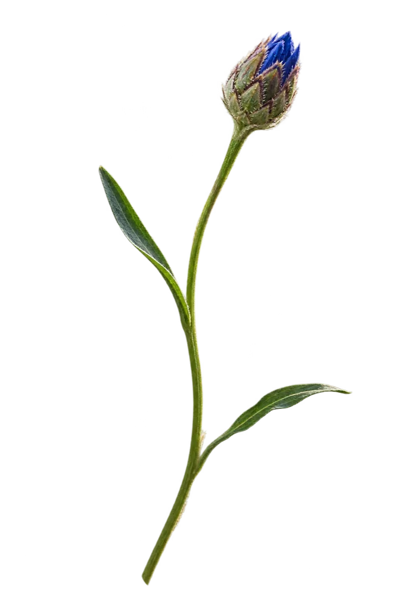
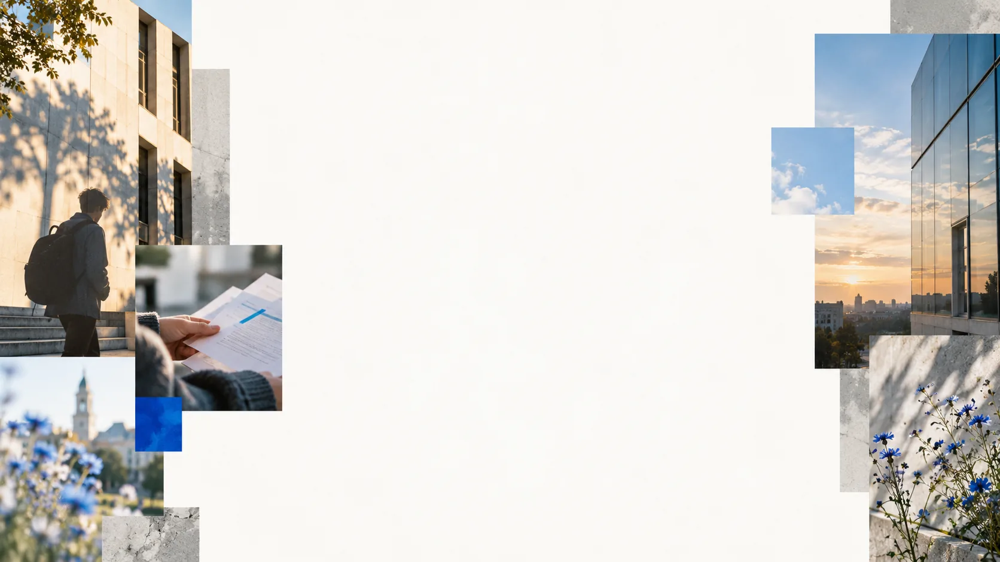
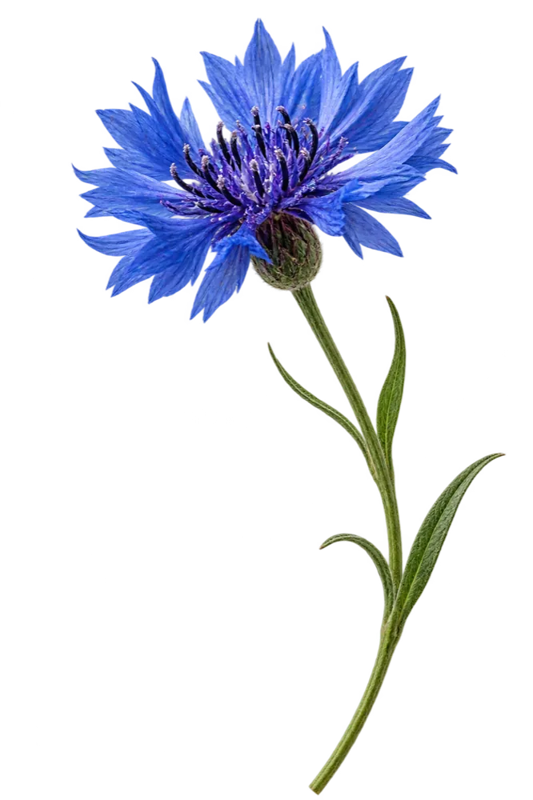
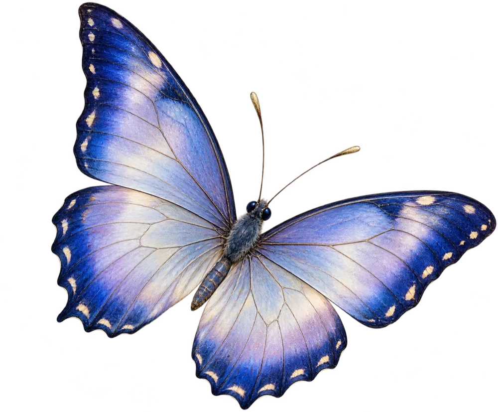
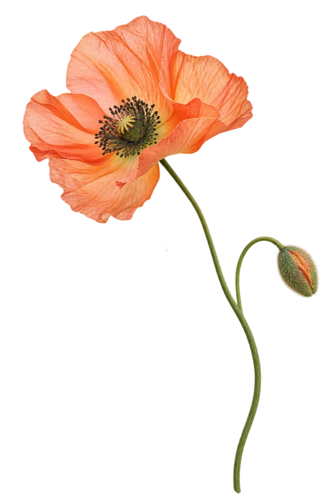
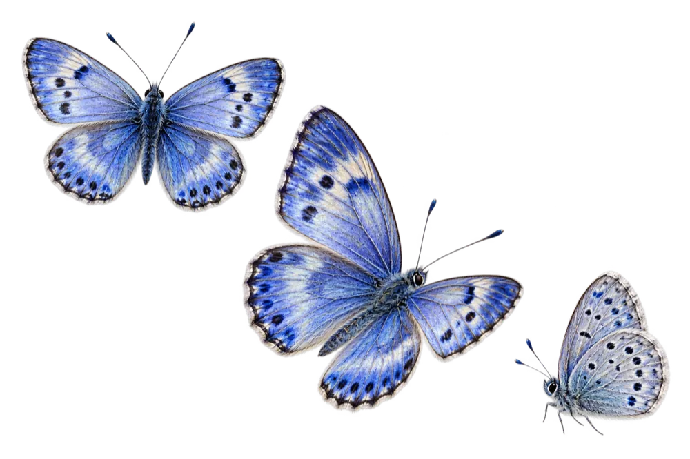
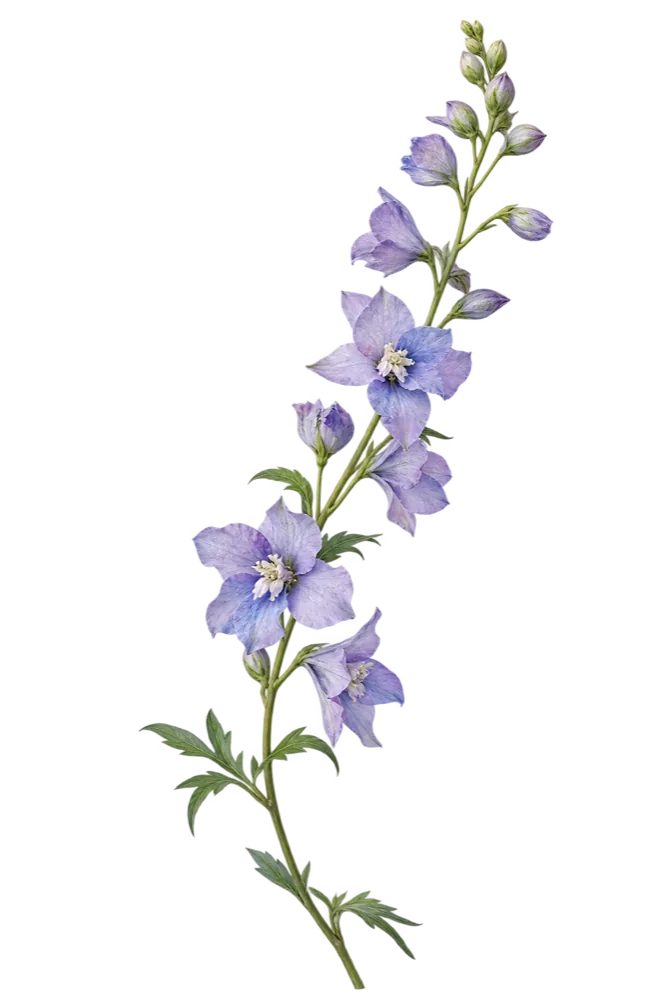
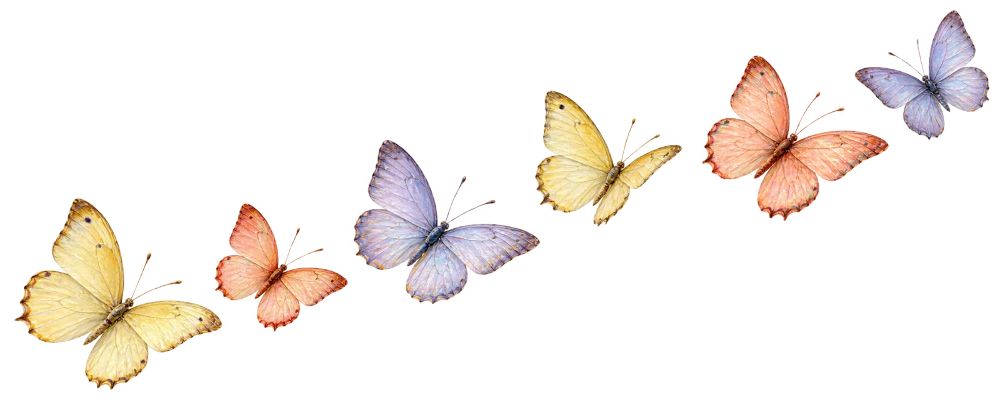
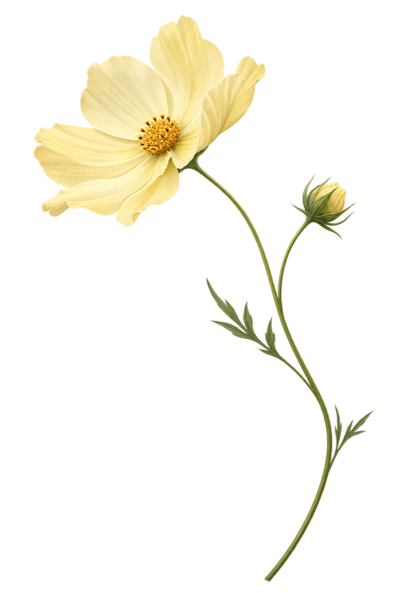

01
Я поступаю
Спокойнее пройти путь до зачисления
ЕГЭ, БВИ, олимпиады, программы, документы, сроки и конкурсные списки.
Спросить о поступлении ↗ поступариум
поступариум

От подачи документов до пересдач и стипендий — Поступариум находит ответы в официальных материалах университета.
Начнём с вашей ситуации

Я поступаю
ЕГЭ, БВИ, олимпиады, программы, документы, сроки и конкурсные списки.
Спросить о поступлении ↗
Я уже студент
Пересдачи, оценки, учебный план, стипендии, общежитие и справки.
Спросить об учёбе ↗
Не нужно подбирать правильные слова
Поступариум понимает обычную речь, находит нужное правило и сразу показывает официальный источник.


Для подтверждения БВИ нужен установленный вузом балл ЕГЭ по профильному предмету. Точное значение зависит от олимпиады и программы.
Для университетов
Поступариум отвечает абитуриентам и студентам в Telegram и на сайте, показывает источники и собирает самые частые темы.
Написать нам
Без очереди и ожидания сотрудника.
Не придумывает правила и показывает источник.
Одна база знаний для двух каналов.
Видно, о чём спрашивают чаще всего.

Важно знать
Да. Для абитуриентов и студентов бесплатно доступно до 10 запросов в день.
Поступариум — независимый проект. Он отвечает по официальным документам вуза, но не заменяет приёмную комиссию.
Оставьте заявку в разделе «Для университетов». Запуск нового факультета занимает до 7 дней.

Не оставайтесь с вопросом